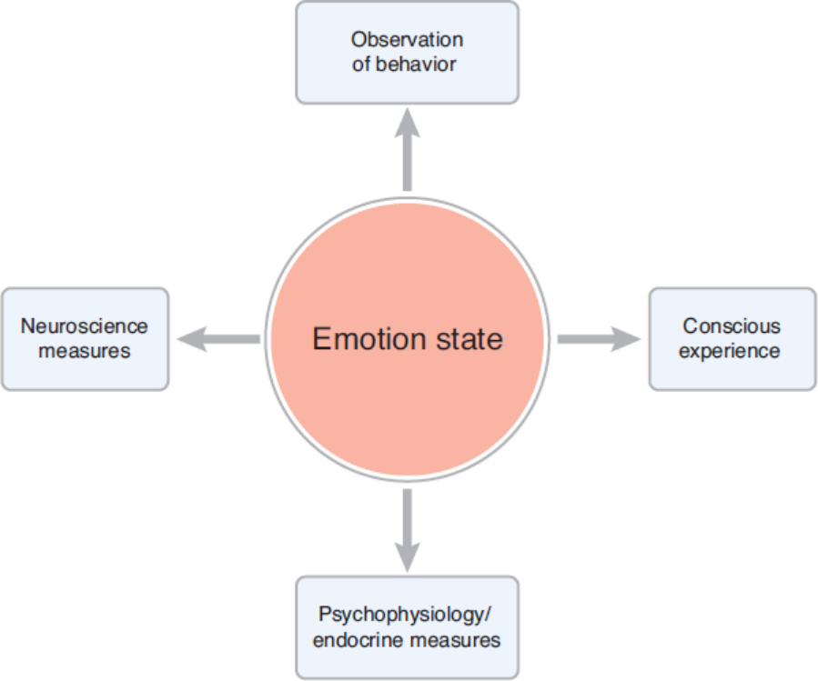
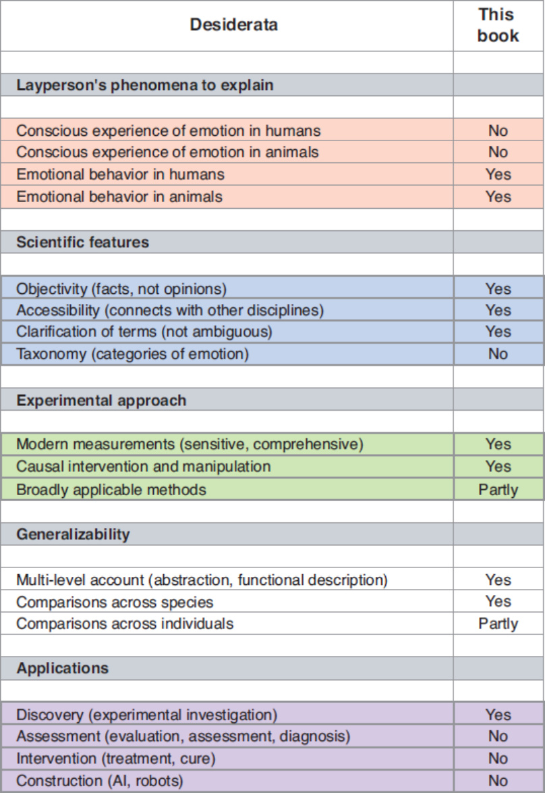

Chương 1 — Chúng Ta Chưa Biết Gì Về Cảm Xúc?
Kẻ thù lớn nhất của tri thức không phải là sự dốt nát, mà là ảo tưởng về tri thức. —Ralph J. Boorstin
Nếu bạn giống như hầu hết mọi người, bạn thấy tự tin rằng, bởi vì bạn có cảm xúc, bạn biết rất nhiều về cảm xúc là gì và chúng hoạt động thế nào. Chúng tôi tin rằng gần như chắc chắn bạn đã nhầm. Trong lĩnh vực cảm xúc, cũng như ở hầu hết các lĩnh vực, sự quen thuộc không đồng nghĩa với chuyên môn. Sau cùng, bạn có một trái tim, nhưng điều đó không khiến bạn trở thành chuyên gia về tim. Bạn để chuyện đó cho bác sĩ tim mạch của mình.
Thế nhưng khoa học về cảm xúc lại đầy rẫy vấn đề này: dường như ai cũng nghĩ mình biết cảm xúc là gì. Điều này là vì tất cả chúng ta đều có những niềm tin trực giác mạnh mẽ, và thường thì không có cơ sở, về cảm xúc. Chẳng hạn, một số người hoàn toàn chắc chắn rằng động vật có cảm xúc; những người khác lại hoàn toàn chắc chắn rằng động vật không thể có cảm xúc. Thông thường thì không phe nào đưa được lý do thuyết phục cho niềm tin của mình, nhưng họ vẫn cứ giữ lấy nó.
Chúng ta không thể nhấn mạnh đủ mức độ ảnh hưởng bao trùm của quan điểm thông thường về cảm xúc đối với cách chúng ta (nghĩa là, các nhà nghiên cứu trong lĩnh vực này) đặt ra các câu hỏi khoa học. Chúng ta cần thoát khỏi những giả định thông thường của mình—hoặc ít nhất là đặt câu hỏi về tất cả chúng—nếu muốn đặt đúng câu hỏi ngay từ đầu. Chương này giới thiệu các chủ đề của cuốn sách thông qua tiền đề quan trọng này, và kết thúc bằng cách liệt kê những gì chúng ta lý tưởng mà muốn có từ một khoa học trưởng thành về cảm xúc, cũng như những mục trong danh sách đó mà chúng ta sẽ giải quyết trong cuốn sách này.
Chúng tôi viết cuốn sách này với hai mục tiêu tổng quát. Mục tiêu thứ nhất là làm nổi bật chủ đề cảm xúc, lưu ý rằng nó rất đáng quan tâm không chỉ đối với người ngoài chuyên ngành mà còn đối với nhiều lĩnh vực khoa học, và rằng nó cũng là một chủ đề rất
quan trọng. Đồng thời, chúng tôi nhấn mạnh rằng hiện chúng ta biết rất ít về nó—đặc biệt là, chúng ta biết ít hơn nhiều so với những gì chúng ta nghĩ mình biết. Đây là tin tốt cho các nhà khoa học: còn nhiều việc phải làm, những việc thú vị và quan trọng.
Mục tiêu thứ hai là cung cấp một bản tóm tắt về những gì chúng ta thực sự biết và phác thảo một khung để hiểu các phát hiện thực nghiệm đó, cũng như để đặt ra những câu hỏi mới cho tương lai. Trong thực tế, quá trình này rất rời rạc: chúng ta cần có một ít dữ liệu ngay cả chỉ để bắt đầu suy nghĩ về cảm xúc là gì, nhưng rồi chúng ta phát hiện ra các vấn đề trong cách các thí nghiệm trước đó được tiến hành và giải thích. Trong biện chứng của nghiên cứu khoa học thực tế, cả khung khái niệm lẫn phát hiện thực nghiệm đều liên tục được xem xét lại, và thông tin cho nhau. Tuy nhiên, chúng tôi không viết cuốn sách của mình theo cách đó. Thay vào đó, chúng tôi bắt đầu với một số nền tảng cho một khoa học về cảm xúc (chương 2)—những cam kết về bản thể luận và nhận thức luận mà nó đòi hỏi, cấu trúc mà một lời giải thích mang hình dạng nào—rồi tiến dần tới một danh sách các đặc điểm hay thuộc tính của cảm xúc (chương 3), mà cuối cùng chính là những thứ chúng ta tìm kiếm và khám phá thông qua nghiên cứu thực nghiệm (các chương 4–9). Chúng tôi trở lại với các nền tảng và câu hỏi một lần nữa ở các chương 10 và 11, bằng cách đối chiếu quan điểm của mình với quan điểm của người khác, và bằng cách đề xuất một số thí nghiệm cho tương lai.
Các cảm xúc theo Inside Out
Có điều gì về cảm xúc mà chúng ta muốn hiểu? Và chúng ta nghĩ rằng mình hiểu, nhưng thực ra không hiểu (hoặc hiểu sai)? Bởi vì cảm xúc hiện diện khắp nơi trong cuộc sống của chúng ta, và là phần không thể tách rời trong trải nghiệm của chúng ta về thế giới, nên rất dễ—và nguy hiểm—đưa ra những quan điểm đơn giản hóa không chịu được sự xem xét kỹ hơn, và thay vào đó cản trở tiến bộ khoa học vì chúng tạo ra "ảo tưởng về tri thức."
Bộ phim Inside Out, đoạt Giải Oscar năm 2016 cho Phim hoạt hình hay nhất cũng như một giải Quả cầu vàng, là một ví dụ điển hình về nhiều giả định phổ biến nhưng sai lầm về cảm xúc. Khi bạn xem phim, bạn được xem một cách nhìn tưởng tượng về cách các cảm xúc được cho là hoạt động bên trong một
cô bé mười hai tuổi, cách những cảm xúc đó được cho là hòa nhập với trí nhớ và nhân cách, và cách chúng được cho là biểu hiện thành hành vi. Nếu cách nhìn của Inside Out về cảm xúc là đúng, bạn sẽ muốn kết luận rằng chúng ta hiểu được một lượng khổng lồ về cách cảm xúc hoạt động—và, nói chung hơn, về cách tâm trí và não bộ hoạt động. Nhưng cách nhìn của Inside Out về cách cảm xúc hoạt động là sai. Khi xem xét chính xác điều gì sai với nó, chúng ta có thể làm nổi bật một số khoảng trống trong hiểu biết hiện tại của chúng ta về cảm xúc. Nếu bạn đã xem phim và thấy cách nhìn về cảm xúc được Inside Out miêu tả là ngốc nghếch, thì bạn đã đi trước—nhưng hãy kiên nhẫn với chúng tôi khi chúng tôi dùng nó làm ví dụ để phơi bày những niềm tin có vấn đề về cảm xúc.
Cách nhìn của Inside Out về cảm xúc lấy làm tiền đề ý tưởng rằng tất cả cảm xúc của chúng ta đều quy về một số ít cảm xúc căn bản: trong phim, đó là niềm vui, giận dữ, sợ hãi, buồn bã, và ghê tởm. Năm cảm xúc này được hoạt hình hóa thành những nhân vật khác nhau—những homunculus nhỏ xinh sống trong não của cô bé và đấu nhau để giành quyền kiểm soát hành vi và trạng thái tinh thần của cô. Những homunculus này ngồi tại một bảng điều khiển và nhìn thế giới bên ngoài qua một màn hình. Chúng phản ứng với thế giới bên ngoài, và để đáp trả, chúng thao tác các cần gạt và công tắc điều khiển hành vi của cô bé. Chúng cũng bị ảnh hưởng bởi những ký ức được tượng trưng bằng những viên bi trong suốt; hơn nữa, một loạt công viên chủ đề tạo nên một cảnh quan tinh thần tượng trưng cho các khía cạnh khác nhau của nhân cách cô bé. Năm nhân vật cảm xúc đấu nhau để giành quyền tiếp cận những viên bi ký ức và cố giữ cho các điểm tham quan công viên chủ đề của cô bé hoạt động.
Từ quan điểm của bộ phim, năm cảm xúc là lực lượng chi phối kiểm soát suy nghĩ, ký ức, nhân cách, và hành vi của cô bé; còn suy luận, lý luận, và các hoạt động nhận thức khác bị đẩy vào một sân khấu phụ. Thực sự thì cô bé là một sinh vật hoàn toàn thuộc về cảm xúc. Những chi tiết này của bộ phim có thể không phản ánh cách bạn nghĩ về cảm xúc, nhưng chúng mô tả đặc trưng cách mà nhiều người nghĩ.
Vậy thì điều gì sai với ẩn dụ sáng tạo và hấp dẫn của bộ phim? Hãy mổ xẻ một vài ý tưởng chính về cảm xúc mà Inside Out trình bày, làm nổi bật những sai lầm trong các giả định nền tảng của chúng, và cố gắng diễn đạt các câu hỏi khoa học mà chúng đặt ra. Dù khoa học có thể chưa có câu trả lời, bài tập này sẽ giúp chúng ta đặt khung cho các vấn đề.
Ý tưởng 1. Có một số ít cảm xúc căn bản. Quan điểm thịnh hành, được ghi nhận trong nhiều sách giáo khoa tâm lý học, là có một tập nhỏ các cảm xúc "chính" hay "căn bản": như chúng tôi đã nói, theo Inside Out thì đó là niềm vui, giận dữ, sợ hãi, buồn bã, và ghê tởm. Các lý thuyết cảm xúc khoa học khác nhau đưa ra phạm vi rất rộng về số lượng cảm xúc căn bản—từ hai đến mười một! Một loại cảm xúc thứ hai thường được gọi là cảm xúc "xã hội" hay "đạo đức" và thường bao gồm xấu hổ, ngượng ngùng, tự hào, và những cảm xúc khác. Những cảm xúc xã hội này được cho là gắn bó về bản chất với giao tiếp xã hội chặt chẽ hơn so với các cảm xúc căn bản. Nhưng dù có nhiều sơ đồ khác nhau, nhiều lý thuyết cảm xúc cổ điển có xu hướng chia sẻ ý tưởng về một tập hợp cố định và tương đối nhỏ các cảm xúc tương ứng với những từ chúng ta có cho cảm xúc trong tiếng Anh.
Ý tưởng về một tập nhỏ các cảm xúc căn bản được giới thiệu nổi bật nhất bởi nhà tâm lý học Paul Ekman, chủ yếu dựa trên dữ liệu từ các nghiên cứu của ông về biểu hiện cảm xúc trên khuôn mặt ở con người. Ekman lập luận rằng các biểu hiện trên khuôn mặt của những cảm xúc căn bản có thể được nhận ra ở mọi nền văn hóa loài người (Ekman 1994); ông thậm chí còn nghiên cứu chúng ở các bộ lạc ở New Guinea. Tập cảm xúc căn bản của Ekman gồm hạnh phúc, ngạc nhiên, sợ hãi, giận dữ, ghê tởm, và buồn bã (dù đôi khi người ta cũng thêm khinh miệt). Nhà sinh học thần kinh Jaak Panksepp cũng đề xuất một tập cảm xúc căn bản tương tự, rút ra từ các quan sát của ông về hành vi động vật: tìm kiếm, cuồng nộ, sợ hãi, ham muốn, chăm sóc, hoảng loạn, và vui chơi (Panksepp 1998). Những lý thuyết cảm xúc này có nhiều điểm đáng giới thiệu và đã khơi dậy toàn bộ các dòng nghiên cứu quan trọng. Nhưng chúng cũng gợi ý hai giả định nền tảng đáng ngờ (mà chính Ekman và Panksepp có thể đã hoặc chưa từng chủ trương).
Giả định đáng ngờ 1: Các cảm xúc (ít nhất là những cái "chính") là không thể phân rã. Một tiền giả định thường đi kèm với ý tưởng về một tập nhỏ các cảm xúc chính là chúng là những đơn vị không thể phân rã. Theo giả định này, những cảm xúc như "sợ hãi" hay "giận dữ" không thể được chia nhỏ thành các thành phần vẫn mang tính cảm xúc. Nhà tâm lý học Lisa Feldman Barrett đã phản đối mạnh mẽ giả định này, chỉ ra rằng nó đòi hỏi niềm tin vào một dạng "bản chất" bí ẩn nào đó của cảm xúc—niềm tin rằng có một cái gì đó không thể phân rã khiến mỗi cảm xúc chính trở thành đúng cảm xúc mà nó là (Feldman Barrett 2017a). Giả định trung tâm này là nền tảng cho cách biểu diễn từng cảm xúc chính
trong Inside Out như một nhân vật riêng biệt. "Niềm vui" và "sợ hãi" không hòa lẫn vào nhau; mỗi cái là một cá nhân riêng biệt. Chúng có bản sắc và chức năng ổn định, cố định, và không chia sẻ thành phần nào (chẳng hạn, trong ngôn ngữ ẩn dụ của bộ phim, chúng không dùng chung nội tạng, chi, v.v).
Tuy nhiên, có rất ít bằng chứng khoa học cho thấy "niềm vui," "sợ hãi," hay "giận dữ" là không thể phân rã và không chia sẻ các phần thành phần. Một quan điểm thay thế cũng hợp lý không kém cho rằng mỗi cảm xúc này được tạo thành từ một tập hợp các thành phần, hay các khối xây dựng, trong đó một số được các cảm xúc khác chia sẻ. Những hoài nghi ban đầu như thế dẫn đến tập câu hỏi khoa học sau đây, có thể làm điểm khởi đầu cho nghiên cứu sâu hơn:
"Các trạng thái cảm xúc khác nhau có được cấu thành từ những đặc điểm hay chiều mà được chia sẻ, ở những mức độ khác nhau, qua nhiều cảm xúc không? Có số cảm xúc nào được cấu thành từ, hoặc dựa trên, sự kết hợp của những cảm xúc căn bản khác không?"
Giả định đáng ngờ 2: Các cảm xúc chính tương ứng với những cảm xúc mà chúng ta có tên gọi trong tiếng Anh.
Liên quan đến giả định đáng ngờ 1 là ý tưởng rằng những từ như "hạnh phúc," "sợ hãi," "giận dữ," v.v. thực sự chỉ ra các hạng mục cảm xúc có nguyên tắc khoa học. Dễ thấy tại sao điều này khó có thể đúng. Thứ nhất, chúng ta đã có những từ đó cho cảm xúc từ rất lâu trước khi có bất kỳ khoa học nào về cảm xúc—vậy tại sao lại mong chúng khớp tốt với các hạng mục cảm xúc khoa học? Thứ hai, các nền văn hóa khác nhau có những từ khác nhau cho cảm xúc, và nhiều trong số đó hóa ra cực kỳ khó dịch. Trong tiếng Đức, từ "Schadenfreude" chỉ cảm xúc chúng ta cảm thấy khi vui lên vì chuyện không may của người khác. Có nên coi đó là một cảm xúc chính chỉ vì có một từ phổ biến cho nó trong tiếng Đức không? Có rất nhiều ví dụ khác, được liệt kê một cách thú vị trong cuốn sách The Book of Human Emotions (Sách về các cảm xúc con người) của Tiffany Watt Smith (Smith 2016). Điều này đặt ra một số câu hỏi khoa học quan trọng:
"Chúng ta nên phân loại cảm xúc thế nào? Có bao nhiêu cảm xúc, và chúng ta nên đặt tên cho chúng là gì? Có những cảm xúc khác nhau ở các nền văn hóa khác nhau không? Có những cảm xúc khác nhau ở các
loài khác nhau không? Chúng ta có thể dùng một từ như 'sợ hãi' để chỉ cùng một loại trạng thái cảm xúc ở một người, một con chó, và một con mèo không? Cảm xúc lần đầu xuất hiện như thế nào và khi nào trong tiến hóa, và chúng đã đa dạng hóa ra sao?"
Với việc chúng ta còn biết rất ít về những câu hỏi này, và với việc có lý do chính đáng để tin rằng các hạng mục cảm xúc hiện tại của chúng ta ("hạnh phúc," "buồn bã," v.v.) sẽ cần được xem xét lại, chúng ta sẽ nói rất ít trong cuốn sách này về những cảm xúc cụ thể. Chúng tôi sẽ nhắc đến một số cảm xúc (đáng chú ý là "sợ hãi") để làm ví dụ. Và chúng tôi sẽ phác thảo cách một khoa học cảm xúc trong tương lai có thể cho chúng ta những hạng mục hay chiều tốt hơn để phân loại cảm xúc. Nhưng cuốn sách này chủ yếu nói về cảm xúc nói chung, không phải về các hạng mục cảm xúc cụ thể.
Ý tưởng 2. Các cảm xúc được kích hoạt cứng nhắc bởi các kích thích bên ngoài cụ thể. Trong bộ phim Inside Out, cả năm nhân vật cảm xúc đều ngồi lười nhác quanh bảng điều khiển, nhìn vào một màn hình chiếu thế giới bên ngoài vào tâm trí cô bé, và chỉ được kích hoạt để hành động khi một kích thích hay hoàn cảnh phù hợp xuất hiện. Trong phim, một số kích thích không kích hoạt một cảm xúc nhất định chút nào (chẳng hạn, nhân vật "giận dữ" thường ngồi gật gù trên ghế và không phản ứng trừ khi có chuyện gì đó làm cô bé điên lên), trong khi những kích thích khác lại kích hoạt nhiều cảm xúc. Nếu miêu tả trong phim là chính xác, chúng ta có thể dễ dàng xác định các trạng thái cảm xúc của người khác (và có lẽ cả các loài động vật khác) bằng một danh sách đơn giản các quy tắc liên kết kích thích cụ thể với cảm xúc cụ thể một cách đặc trưng và cứng nhắc. Bức tranh này giả định rằng cảm xúc đơn giản và tự động hơn rất nhiều so với những gì chúng ta hiện biết. Theo Ý tưởng 2, cảm xúc sẽ giống hệt như các phản xạ. Một số thứ sẽ làm bạn vui, số khác làm bạn buồn, và một số sẽ kích hoạt một sự pha trộn cụ thể các cảm xúc, theo một tập quy tắc.
Giả định đáng ngờ 3. Các cảm xúc giống như các phản xạ. Bộ phim đã đúng khi cho rằng cảm xúc thường được kích hoạt bởi các kích thích trong môi trường xung quanh chúng ta. Nhưng cái gì quyết định cảm xúc nào được kích hoạt bởi kích thích nào và trong hoàn cảnh nào? Tại sao nhìn thấy một con chó lại chỉ gợi ra một phản ứng cảm xúc tối thiểu ở một số người, mà lại gợi ra sự sợ hãi hay niềm vui mãnh liệt (những phản ứng cảm xúc có tính tích cực–tiêu cực đối lập) ở những người khác? Điều gì giải thích được sự linh hoạt đặc biệt mà qua đó nhiều kích thích rất khác nhau,
tùy theo ngữ cảnh và tùy theo con người, có thể gợi ra cảm xúc? Có thể đặt ra các câu hỏi khoa học sau đây:
"Cái gì quyết định liệu một kích thích bên ngoài có gợi ra cảm xúc hay không, và cái gì quyết định loại cảm xúc được gợi ra? Vai trò của sự phát triển và học tập trong việc xác định phản ứng của một sinh vật đối với một kích thích nhất định là gì? Quá trình này khác với các ánh xạ kích thích–phản ứng đơn giản hơn, chẳng hạn như phản xạ, như thế nào?"
Ý tưởng 3. Các cảm xúc kiểm soát hành vi của chúng ta. Bộ phim miêu tả các nhân vật cảm xúc kiểm soát hành vi của cô bé bằng cách thao tác các cần điều khiển trên bảng điều khiển. Cô bé chỉ là một con rối bất hạnh, với cảm xúc quyết định hành vi của mình. Ẩn dụ thị giác trung tâm này gói trọn tiêu đề của bộ phim: hành vi của chúng ta được kiểm soát, "từ bên trong ra," bởi cảm xúc của chúng ta. Đặc điểm này là mặt tương đương với ý tưởng 2 ở trên, nhưng xét về đầu ra hành vi thay vì đầu vào kích thích.
Giả định đáng ngờ 4. Các cảm xúc cụ thể gây ra những hành vi cố định và cụ thể. Trải nghiệm chủ quan của chúng ta về cảm xúc dẫn đến trực giác rằng cảm xúc gây ra hành vi của mình: tôi khóc vì tôi buồn. Thế nhưng không phải nhà lý thuyết cảm xúc nào cũng đồng ý với giả định này. Thực vậy, nhà tâm lý học người Mỹ thế kỷ mười chín William James đã lập luận, trái với trực giác, rằng cảm xúc là hệ quả, chứ không phải nguyên nhân, của hành vi: tôi thấy sợ vì tôi chạy trốn con gấu, tôi không chạy vì tôi thấy sợ (James 1884). Dẫu vậy, James đã từng nghi ngờ rằng chỉ quan sát các phản ứng cơ thể thôi đã đủ để nhận diện các hạng mục cảm xúc cụ thể. Nếu đúng là các cảm xúc cụ thể gây ra những hành vi cố định và cụ thể, chúng ta có thể suy ra không sai sót cảm xúc của một người chỉ bằng cách nhìn hành vi của họ. Nếu vậy, khi kết hợp với giả định đáng ngờ 3, chúng ta sẽ chẳng cần cảm xúc để giải thích hành vi; chỉ cần một tập quy tắc liên kết kích thích với hành vi. Đó chính là quan điểm mà chủ nghĩa hành vi ủng hộ vào đầu thế kỷ hai mươi. Một lý do cho sự sụp đổ của chủ nghĩa hành vi là người ta nhận ra rằng các ánh xạ từ kích thích sang hành vi quá phức tạp, và quá phụ thuộc vào ngữ cảnh, suy luận, và học tập, đến mức không thể được công thức hóa thành các quy tắc. Cảm xúc, theo quan điểm của chúng tôi, là những trạng thái bên trong
cho phép một ánh xạ linh hoạt sang hành vi, như chúng tôi sẽ trình bày chi tiết xuyên suốt cuốn sách này. Điều này dẫn đến các câu hỏi khoa học sau đây:
"Các trạng thái cảm xúc bên trong có gây ra hành vi, hay chúng chỉ là một sự đi kèm với hành vi? Hay cảm xúc thực chất có thể là hệ quả của hành vi? Mối liên hệ nhân quả chính xác giữa kích thích, cảm xúc, và hành vi là gì? Chúng ta có thể nhận diện cảm xúc khi không có hành vi bằng cách nào? Sau cùng, chúng ta có thể giận dữ mà không đấm ai hay biểu lộ bất kỳ hành vi nào dễ nhận thấy khác."
Ý tưởng 4. Các cảm xúc khác nhau nằm ở các vùng não khác nhau, rời rạc. Bức tranh quyến rũ về cảm xúc như những nhân vật hoạt hình biết đi biết nói trong Inside Out gắn chặt với niềm tin rằng các cảm xúc khác nhau phải tương ứng với các mô-đun khác biệt về giải phẫu trong não. Chẳng hạn, có một nơi trong não dành cho sự sợ hãi không? Đây là một câu hỏi từng nhận được rất nhiều sự chú ý, kể cả sự điều tra khoa học nghiêm túc!
Giả định đáng ngờ 5. Các cảm xúc cụ thể xảy ra ở các cấu trúc não cụ thể. Kỷ nguyên của chụp ảnh chức năng bằng fMRI, cũng như việc nghiên cứu các bệnh nhân với tổn thương não khu trú, đã dẫn đến ý tưởng rằng cảm xúc được tạo ra ở các cấu trúc não khu trú. Chẳng hạn, các phát hiện về hạch hạnh nhân (một vùng não được nghiên cứu ở cả hai phòng thí nghiệm của chúng tôi và chúng tôi sẽ trở lại khá chi tiết ở các chương sau) đã dẫn đến quan điểm phổ biến rằng "sự sợ hãi nằm ở hạch hạnh nhân." Thế nhưng công trình gần đây cho thấy rõ quan điểm này không thể đúng; thực ra, nó thậm chí còn chẳng có ý nghĩa, và rằng cảm xúc phụ thuộc vào một tập vùng não phân tán hơn nhiều. Điều này dẫn đến các câu hỏi khoa học sau đây:
"Việc xử lý cảm xúc được thực hiện như thế nào trên khắp não bộ? Có các cơ chất thần kinh chức năng có thể nhận diện được nào tổ chức hay thực hiện các trạng thái cảm xúc cụ thể không? Hay một trạng thái cảm xúc nhất định được tạo ra theo cách phân tán đến mức không thể gán một chức năng trong cảm xúc cho bất kỳ vùng não hay quần thể tế bào thần kinh nào? Có bao giờ có thể đoán một người đang trải qua cảm xúc gì chỉ bằng cách kiểm tra hoạt động trong não của người đó không?"
Như chúng tôi sẽ giải thích sau, các cách tiếp cận thần kinh học hiện đại đã cho chúng ta một cái nhìn về chức năng não bộ dung hòa được một sự lưỡng ngầm ẩn trong những câu hỏi này. Hóa ra là không có cấu trúc não vĩ mô nào chuyên dành riêng cho cảm xúc (sự sợ hãi không nằm "trong hạch hạnh nhân"), nhưng vẫn có tính đặc hiệu. Tính đặc hiệu đó nằm ở cấp độ của các mạch thần kinh và quần thể tế bào, một cấp độ tổ chức đòi hỏi các công cụ thần kinh học hiện đại để nhìn thấy. Chúng tôi dành một thời gian ở các chương 4 và 5 để giải thích các công cụ thần kinh học này, vì logic của chúng cần thiết để diễn đạt lại các câu hỏi về cảm xúc.
Ý tưởng 5. Các cảm xúc là những homunculus có ý thức. Bộ phim minh họa rất hay ý tưởng rằng não là một cỗ máy có một (hoặc vài) người nhỏ bên trong, người nhìn thế giới bên ngoài, phản ứng với nó, rồi chuyển những phản ứng đó sang chúng ta. Nói cách khác, trải nghiệm chủ quan của chúng ta về cảm xúc được tạo ra và thể hiện bởi trải nghiệm chủ quan của một phiên bản thu nhỏ của chính mình trong não, một cái gọi là homunculus (hộp 1.1). (Để nói thêm, cũng thú vị là cách nhìn này—về những homunculus cảm xúc nhỏ bé bên trong chúng ta—ở một mức độ nào đó giải thoát chúng ta khỏi trách nhiệm hoàn toàn đối với hành vi cảm xúc của mình—như khi chúng ta nói, "cơn giận của tôi đã bắt tôi làm thế.")
Giả định đáng ngờ 6. Các cảm xúc thuần túy là những trải nghiệm chủ quan. Não tạo ra một biểu diễn nội tại của thế giới bên ngoài, và chuyển biểu diễn đó thành suy nghĩ, cảm giác, và hành động như thế nào, là một câu hỏi mở trung tâm trong thần kinh học. Chúng ta biết chắc chắn rằng không có một người nhỏ nào ngồi trong não nhìn vào màn hình và kéo các cần điều khiển. Những thứ duy nhất có quyền truy cập vào các mô hình hoạt động thần kinh trong não là chính các nơ-ron khác trong não. Cách các nơ-ron "giải mã" thông tin được biểu diễn bởi các nhóm nơ-ron khác và chuyển thông tin đó tiếp cho những nhóm nơ-ron khác nữa để tổ chức và biểu hiện suy nghĩ, cảm xúc, và hành động, là một bí ẩn sâu xa mà chúng ta còn rất xa mới giải được. Điều này dẫn đến các câu hỏi khoa học sau đây:
"Các cảm xúc phát sinh trong não chính xác như thế nào? Chúng ta có thể tách trải nghiệm chủ quan, có ý thức về cảm xúc khỏi sự tồn tại của chính các trạng thái cảm xúc không? Cảm xúc có nhất thiết phải có ý thức không? Nếu có,
thì chúng ta nên nghiên cứu chúng ở động vật như thế nào, những sinh vật có thể có hoặc không có ý thức và, dù sao đi nữa, cũng không thể kể cho chúng ta biết chúng cảm thấy ra sao?"
Như chúng tôi sẽ trình bày rõ hơn ở phần sau, chúng tôi cho rằng điều then chốt là phải phân biệt giữa cảm xúc như những trạng thái chức năng bên trong, và những trải nghiệm có ý thức về cảm xúc (thường được gọi là "cảm giác"). Cảm xúc và cảm giác không phải là một, dù đương nhiên chúng liên quan chặt chẽ với nhau. Hầu hết cuốn sách này nói về cảm xúc, không phải về cảm giác. Chúng tôi xem xét một số công trình về cảm giác gần cuối cuốn sách.
Hộp 1.1. Ngụy biện của homunculus.
Một homunculus, theo nghĩa đen là "người nhỏ," chỉ ý tưởng rằng bên trong não bạn có một quan sát viên riêng, một cái gì đó có thể nhìn và giải thích hoạt động của tất cả các vùng não khác theo cách mà một nhà khoa học bên ngoài có thể ghi nhận từ não bạn và hiểu được quá trình xử lý của nó. Ý tưởng về homunculus có một lịch sử lâu dài trong tâm lý học và triết học về tâm trí. Về cơ bản nó phát sinh từ sự nhầm lẫn giữa các cấp độ mô tả khác nhau. Một mặt, chúng ta biết rằng con người và động vật có cảm xúc (và nhiều trạng thái tinh thần khác). Mặt khác, chúng ta biết rằng những trạng thái tinh thần này được não tạo ra. Vì thế, rất dễ kết luận rằng cảm xúc hẳn phải được tìm thấy đúng nghĩa trong não, miễn là chúng ta nhìn bằng những công cụ đủ hi vi.
Nhưng tạo ra cảm xúc không giống với việc có một cảm xúc. Để so sánh, có nhiều nơi trong não tham gia vào việc tạo ra thị giác, từ võng mạc đến đồi thị, rồi đến vỏ não. Nhưng bạn không thể tìm thấy thị giác ở bất kỳ vùng nào trong số đó, cũng như chẳng vùng nào trong số đó có trải nghiệm nhìn. Hoặc thêm một ví dụ nữa: bạn có thể lái xe hơi. Vậy ai hay cái gì đang lái? Bạn không thể tự mình lái (khi không có xe) cũng như một chiếc xe không thể tự lái (trừ khi có lẽ là xe tự lái). Và bạn không thể tháo rời chiếc xe để tìm xem "việc lái" thực sự nằm ở đâu. Lái xe, thị giác, và cảm xúc là những thuộc tính của hệ thống: chúng không phải là thuộc tính của bất kỳ
bộ phận thành phần nào, mà tất cả các bộ phận cùng phối hợp để tạo nên thuộc tính đó.
Khía cạnh cảm xúc mà ngụy biện homunculus thường phát sinh nhiều nhất liên quan đến trải nghiệm có ý thức về cảm xúc (hoặc, nói cho cùng, trải nghiệm có ý thức về bất cứ điều gì). Khác với những nhân vật nhỏ mà Inside Out đặt vào tâm trí của một cô bé, không có homunculus nào trong não để trải nghiệm cảm xúc của bạn. Có những hệ thống não khiến bạn có trải nghiệm có ý thức về cảm xúc. Nhưng trải nghiệm có ý thức về cảm xúc là một thuộc tính toàn cục của một người (hoặc con vật), và các cơ chế tạo ra nó thì bản thân chúng không có thuộc tính đó.
Hướng Tới Một Khoa Học Về Cảm Xúc
Nếu không suy nghĩ thêm, có vẻ như việc nghiên cứu cảm xúc và khám phá cách cảm xúc hoạt động trong não nên là chuyện đơn giản. Nhưng các giả định và câu hỏi được phác thảo ở phần đầu chương này cho thấy một khoa học về cảm xúc phải đối mặt với một số thách thức khó khăn đang hiện ra phía trước. Một khoa học về cảm xúc cần xem xét lại hầu hết những trực giác ban đầu của chúng ta về cảm xúc, mài giũa những câu hỏi mơ hồ để chúng có thể được điều tra bằng thí nghiệm, và đối diện với cả vấn đề thực nghiệm lẫn khái niệm.
Hãy nhìn kỹ hơn một trong những nguồn gốc chính của sự lộn xộn khái niệm trong khoa học cảm xúc. Có một giả định rằng các từ, khái niệm, hay loại dữ liệu khác nhau thì phải chỉ đến những sự vật khác nhau. Chúng tôi sẽ lập luận ngược lại rằng chính một sự vật có thể được mô tả bằng những từ rất khác nhau và được đo bằng những loại dữ liệu rất khác nhau. Hãy xem xét hình ảnh gợi suy nghĩ ở trang sau (hình 1.1), do nhà thần kinh học Rebecca Saxe tại MIT tạo ra và được đăng trên Smithsonian Magazine (tháng 12 năm 2015). Saxe đã mời một người mẹ và con của cô vào máy chụp MRI và thu được những hình ảnh này cho thấy não của họ.
Saxe viết:

Hình 1.1: Ảnh chụp MRI của một người mẹ đang hôn con. Được sao chép với sự cho phép, bản quyền thuộc về Rebecca Saxe.
Trong lúc họ nằm đó, máy quét dựng nên một bức tranh về những gì bên trong hộp sọ của họ. Thường thì ảnh MRI được chụp cho các bác sĩ, để tìm khối u hay mạch máu bị tắc. Các nhà khoa học cũng chụp ảnh, để nghiên cứu chức năng và sự phát triển của não. Trong phòng thí nghiệm của tôi tại MIT, chúng tôi dùng MRI để theo dõi dòng máu chảy qua não của trẻ em; chúng tôi kể cho các em nghe chuyện và quan sát hoạt động não của các em thay đổi như thế nào để đáp ứng với cốt truyện. Bằng
cách đó, chúng tôi đang nghiên cứu cách trẻ em suy nghĩ về suy nghĩ của người khác.
Đối với một số người, hình ảnh này là một lời nhắc nhở xáo trộn về sự mong manh của con người. Những người khác lại bị hút bởi cách hai hình người ấy, với quần áo, tóc, và khuôn mặt không nhìn thấy được, trở nên phổ quát, và có thể là bất kỳ người mẹ và đứa con nào, ở bất kỳ thời điểm hay nơi nào trong lịch sử. Lại có những người đơn giản là bị cuốn hút bởi cách não của em bé khác với não của mẹ em; nó nhỏ hơn, mượt hơn và tối hơn—đúng nghĩa đen, vì có ít chất trắng hơn. Đây là một minh họa cho một trong những vấn đề khó nhất của thần kinh học: Làm thế nào mà những thay đổi ở cơ quan nhỏ bé cụ thể đó lại có thể hoàn tất việc triển khai toàn bộ một tâm trí con người?
Còn bản thân tôi, tôi thấy một hình ảnh rất cũ được làm mới. Mẹ và Con là một biểu tượng mạnh mẽ của tình yêu và sự ngây thơ, vẻ đẹp và sự sinh sôi. Dù những giá trị làm mẹ đó, và những người phụ nữ thể hiện chúng, có thể được tôn vinh, chúng thường được nhìn theo sự đối lập với những giá trị khác: truy vấn và trí tuệ, tiến bộ và quyền lực. Nhưng tôi là một nhà thần kinh học, và tôi đã làm việc để tạo ra hình ảnh này; và tôi cũng chính là người mẹ trong đó, cuộn tròn trong ống cùng với con trai tôi.
(Nguồn: http://www.smithsonianmag.com/science-nature/why—captured-MRI-mother-child-180957207/)
Khi bạn đọc đoạn trích trên, có lẽ bạn đã cảm thấy một sự căng thẳng giữa cái nhìn lạnh lẽo, bên trong về hai cơ thể vật lý thể hiện trong ảnh MRI và nhận thức của bạn rằng đây là hai người thật đang thực hiện một hành vi cảm xúc đầy âu yếm. Ảnh MRI chỉ cho thấy độ tương phản của mô, phơi bày xương, dịch, cơ, và não. Đồng thời, chúng ta biết rằng đây là một người mẹ và đứa con—họ là những con người, với suy nghĩ và cảm xúc. Cả cách nhìn hằng ngày của chúng ta về con người lẫn cách nhìn mà MRI làm được đều là về cùng một sự vật.
Đây có lẽ là nhận thức then chốt nhất cho một khoa học về cảm xúc (thực ra, cho cả một khoa học về tâm trí nói chung). Bạn có thể cảm nhận các cảm xúc. Bạn có thể suy ra rằng người khác đang có cảm xúc từ hành vi của họ. Và bạn có thể chụp ảnh và ghi lại dấu vết của cảm xúc trong não. Đây là những loại dữ liệu rất khác nhau, những nguồn bằng chứng rất khác nhau về một cảm xúc. Và thực sự, chúng cần được giữ riêng nếu người ta nghiên cứu chúng như vậy—như chúng ta sẽ thấy, cảm nhận một cảm xúc, có một trạng thái cảm xúc,
và gán cảm xúc cho một người khác gọi ra những quá trình khác nhau trong não của bạn. Dù vậy, trải nghiệm của bạn về cảm xúc của chính mình, sự gán một cảm xúc cho một người khác mà bạn thấy đang cười hay khóc, và cuộc điều tra của nhà thần kinh học về một cảm xúc từ dữ liệu sinh học thần kinh không phải là về ba sự vật khác nhau. Sau cùng, tất cả đều là về một và cùng một sự vật, một trạng thái cảm xúc. Bạn có thể suy ra trạng thái cảm xúc ở người khác từ việc quan sát hành vi của họ, bạn có thể điều tra các cơ chế thần kinh của trạng thái cảm xúc qua các thí nghiệm thần kinh học, và trạng thái cảm xúc có thể khiến chính bạn có một trải nghiệm có ý thức về cảm xúc. Quan sát hành vi, đo lường sinh học thần kinh, và trải nghiệm cá nhân mỗi thứ đều có thể cung cấp bằng chứng cho một và cùng một sự vật: một trạng thái cảm xúc.
Để làm rõ thêm một chút, hãy nhìn cảm xúc từ bốn góc độ: góc độ của nhà sinh học hành vi, người có thể đang quan sát cẩn thận hành vi của một con vật trong tự nhiên hay trong phòng thí nghiệm (hoặc, nói cho cùng, quan sát hành vi của một con người); nhà tâm lý học quan tâm đến việc cho người nói về và đánh giá các trải nghiệm cảm xúc có ý thức của họ; nhà tâm lý học đo các phản ứng cảm xúc trong cơ thể, chẳng hạn như những thay đổi về nhịp tim hay biểu hiện trên khuôn mặt (cách tiếp cận phổ biến trong tâm lý học cảm xúc); và nhà sinh học thần kinh đang nghiên cứu (hay thậm chí thao tác) chức năng của các nơ-ron trong não (hình 1.2). Cả bốn góc độ đều có thể hoàn toàn khách quan và có một phương pháp luận đã được thiết lập và thừa nhận—nhưng chúng là những dữ liệu khá khác nhau và thường không dùng cùng một ngôn ngữ để mô tả các khái niệm và phương pháp liên kết dữ liệu của họ với cảm xúc. Thế nhưng cả bốn đều nghiên cứu cảm xúc.
Trong bốn góc độ đó, đặc biệt là thần kinh học có thể cho bạn thấy những điều mà bạn không bao giờ có được từ hiểu biết hằng ngày về cảm xúc. Loại thuốc nào sẽ hoạt động tốt nhất để chữa trầm cảm? Tại sao một số người lại sợ chó trong khi số khác lại yêu chúng? Và, quan trọng nhất, những cơ chế nền tảng nào tạo ra cảm xúc—các sự kiện sinh học thần kinh trong não khiến nước mắt chảy xuống mặt chúng ta khi ở trong trạng thái buồn bã như thế nào, và trạng thái cảm xúc đó thay đổi phần lớn phần còn lại của hành vi, sự chú ý, trí nhớ, và việc ra quyết định của chúng ta ra sao? Những câu hỏi này và nhiều câu hỏi tương tự quan trọng cho việc điều trị các bệnh tâm thần, cho việc hiểu nhận thức và hành vi con người hằng ngày, và cho việc hiểu nhận thức và hành vi của các
loài động vật khác. Bạn không thể tiếp cận chúng chỉ bằng cách suy nghĩ về cảm giác của mình. Mục tiêu của một thần kinh học cảm xúc nên là làm rõ cách thức và lý do vì sao các cảm xúc cụ thể lại có những đặc điểm mà chúng có: giải thích chúng thông qua các cơ chế nền tảng của chúng (đây là một chủ đề chúng tôi thảo luận chi tiết ở chương 4).

Hình 1.2: Có thể suy ra các cảm xúc từ nhiều loại dữ liệu. Chúng ta thường gán chúng cho chính mình dựa trên trải nghiệm chủ quan; các nhà tâm lý học có thể gán chúng cho chúng ta dựa trên lời kể của chúng ta về trải nghiệm đó. Chúng ta cũng gán chúng cho người khác dựa trên hành vi lộ ra của họ; các nhà tập tính học có thể làm điều tương tự khi quan sát hành vi động vật. Chúng ta cũng có thể dùng các công cụ bổ sung, chẳng hạn như đo nhịp tim hay huyết áp trong phòng thí nghiệm, để suy ra rằng một người đang ở trạng thái cảm xúc, ngay cả khi họ không biểu lộ điều đó qua hành vi lộ ra. Cuối cùng, với tư cách là nhà sinh học thần kinh, chúng ta có thể nhìn trực tiếp vào não để rút ra kết luận về cảm xúc. Tất cả những thước đo này đều là một phần của một khoa học về cảm xúc.
Nhưng dù cuốn sách này sẽ tập trung vào thần kinh học, chúng tôi hy vọng rằng cách tiếp cận rộng rãi và dựa trên chức năng của mình sẽ góp phần vào một khoa học cảm xúc tích hợp, một khoa học điều tra cảm xúc qua hành vi, tâm lý học, và sinh học thần kinh. Một khoa học cảm xúc như vậy cũng nên nhằm điều tra cảm xúc xuyên suốt các loài, từ giun và côn trùng, đến động vật thân mềm và cá, đến chim và bò sát, đến chuột và chó, đến khỉ và con người. Nó sẽ xác định các trường hợp cụ thể của cảm xúc với những trạng thái cụ thể của não; nghĩa là, chúng thực sự được hiện thực hóa ở người và động vật như thế nào. Nhưng nó cũng sẽ giải thích tại sao hoạt động não đó lại hiện thực hóa một loại cảm xúc cụ thể ở người và động vật, và người ta có thể hình dung một cảm xúc như vậy được hiện thực hóa theo cách khác thế nào. Một con robot phi sinh học (thuộc loại phù hợp) có thể về nguyên tắc có cảm xúc không? Trả lời những câu hỏi này đòi hỏi một khung cho phép chúng ta định nghĩa vận hành cảm xúc trong tất cả những trường hợp khác nhau này. Chúng tôi mô tả một khung như vậy ở chương 2.
Chúng ta sẽ thường nói đến "các trạng thái cảm xúc," hoặc, để cho gọn, chỉ là "cảm xúc." Nhưng dĩ nhiên, cảm xúc không hề là những trạng thái tĩnh. Chúng ta gọi chúng là "trạng thái" để cho đơn giản, nhưng với nhận thức rằng chúng là những quá trình phức tạp thay đổi theo thời gian. Chúng ta sẽ mổ xẻ các trạng thái cảm xúc và nói về các quá trình ở những chương sau. Nhưng thực tế là chúng ta vẫn biết rất ít về cấp độ mô tả này—vì thế chúng ta sẽ tiếp tục nói đến "các trạng thái cảm xúc," một lần nữa, với sự thừa nhận đầy đủ rằng cảm xúc thực chất là những quá trình kéo dài theo thời gian.
Các Cảm Xúc Là Những Phản Xạ Tách Rời
Để xem cảm xúc nằm ở đâu trong bức tranh về hành vi phức tạp, hãy bắt đầu bằng cách xem xét một hành vi đơn giản hơn. Chẳng hạn phản xạ gối, là hành vi được tạo ra khi bác sĩ gõ nhẹ gân gối đang thả lỏng của bạn để làm chân bạn cử động. Chúng ta gọi hành vi đó là đơn giản vì hai lý do. Thứ nhất, nó đơn giản vì gối của bạn không giật với gần như bất cứ thứ gì ngoài kích thích cụ thể đó. Nó không cử động nếu bác sĩ thần kinh cho bạn xem hình một cái búa nhỏ. Nó không cử động nếu bạn chỉ nghĩ về cái búa. Nó cũng không cử động nếu bạn gõ vào vai. Thứ hai, chiều ngược lại cũng đúng—việc gõ vào gối không làm được nhiều điều khác ngoài việc làm gối cử động. Tay bạn không cử động, cũng như các bộ phận khác của cơ thể. Vì thế, liên kết từ
kích thích sang hành vi rất hẹp, được bao bọc, và mang tính mô-đun. Thực ra, hiện chúng ta biết rằng bạn có thể bỏ đi toàn bộ não, nhưng miễn là tủy sống còn nguyên vẹn, bạn vẫn sẽ có phản xạ gối.
Giống như các phản xạ khác, phản xạ gối là một ánh xạ kích thích–phản ứng cứng nhắc, hẹp, và tự động. Bạn không cảm thấy mình đã quyết định cử động gối, bạn không có sự thôi thúc cử động nó, bạn không đang nghĩ hay lên kế hoạch cử động gối, và thực ra thì rất khó để không cử động gối. Những phản ứng như vậy có một mục đích, nhưng chúng đối mặt với một vấn đề lớn: thế giới quá phức tạp và hay thay đổi đến mức cần phải liên tục bổ sung ngày càng nhiều phản xạ để xử lý mọi loại kích thích và hành vi thích nghi có thể có. Bạn sẽ cần một phản xạ khác để đáp ứng với mặt đất dưới chân, một chiếc cốc trong tay, thức ăn trên môi, v.v. Bạn cũng sẽ cần một cơ chế nào đó để các phản xạ này có thể trao đổi với nhau, nhờ đó hành vi tổng thể của bạn trở nên phối hợp. Cần có một thứ linh hoạt hơn để một con vật tồn tại trên thế giới. Hãy đón chào cảm xúc.
Như chúng tôi sẽ mô tả ở chương 3, cảm xúc có thể đã tiến hóa từ các phản xạ, nhưng chúng thể hiện những thuộc tính vượt xa những gì phản xạ có thể làm được. Chúng ta có thể xem tập thuộc tính cơ bản nhất này như "các khối xây dựng cảm xúc," chia sẻ một số đặc điểm tối thiểu giúp phân biệt cảm xúc với phản xạ (chúng tôi đưa ra danh sách ở chương 3). Những đặc điểm này của cảm xúc có thể dùng để suy ra cảm xúc ở nhiều loài động vật. Chẳng hạn, ruồi giấm đã có những hành vi đáp ứng một số tiêu chí của các khối xây dựng cảm xúc, chẳng hạn như sự bền bỉ theo thời gian (Gibson et al. 2015). Có một câu chuyện tiến hóa để kể về cách cảm xúc trở nên tinh vi hơn và cuối cùng mang tập thuộc tính đặc trưng cho cảm xúc như chúng ta thấy ở con người. Câu chuyện đó cần là một giải thích chức năng về việc cảm xúc làm gì, chức năng chúng hoàn thành trong đời sống của một con vật.
Một ví dụ cho câu chuyện như vậy là cảm xúc ghê tởm. Sự ghê tởm đã tiến hóa để động vật có thể tránh các thức ăn độc hại hoặc bị nhiễm bẩn. Điều này có vẻ là một vấn đề mà phản xạ có thể giải quyết: chỉ cần liên kết vị của chất độc với hành vi nhổ thức ăn ra là xong. À, nhưng nó phức tạp hơn những gì phản xạ có thể giải quyết. Có nhiều chất độc và chất nhiễm bẩn rất khác nhau. Một số có vị dở, một số thì không. Số khác có thể trông, cảm, hoặc ngửi thấy bị nhiễm bẩn. Cũng có những chất độc và chất
nhiễm bẩn mà động vật học được bằng cách xem điều gì xảy ra với các cá thể khác (hay, ở con người, bằng việc người khác bảo bạn điều gì có thể xảy ra nếu bạn ăn chúng). Kiểu học tập này có thể thấy ở trẻ nhỏ—sở thích ăn uống của chúng thay đổi đáng kể khi lớn lên. Trẻ nhỏ thường cho vào miệng những thứ mà chúng ta người lớn thấy ghê tởm, nhưng sau đó học cách tránh những thức ăn đó.
Tương tự, ngay cả ở người lớn cũng có thể có sự học tập sâu sắc về sự ghê tởm. Chẳng hạn, chúng ta có thể bị ốm nặng vì ngộ độc thực phẩm và từ đó không còn thích món đó nữa. Cuối cùng, trong một số tình huống, chúng ta có thể phải vượt qua cảm giác ghê tởm và ăn vào thứ mà lẽ ra chúng ta tránh để sinh tồn: hãy nghĩ đến một nhà thám hiểm lạc đường phải uống nước tiểu của chính mình để tránh chết vì mất nước (một chiến lược chỉ có tác dụng trong thời gian ngắn, nếu bạn tò mò). Vì thế rõ ràng là có cả khía cạnh bẩm sinh lẫn học được trong sự ghê tởm, và trạng thái ghê tởm có tác động mạnh đến hành vi của chúng ta nhưng ở một mức độ nhất định cũng có thể bị vượt qua. Phản xạ thì đơn giản là không có sự linh hoạt để hoạt động qua những trường hợp đa dạng như vậy; chúng được chỉnh quá hẹp cho kích thích cụ thể, và quá cứng nhắc, không thể kiểm soát trong cách chúng gây ra hành vi.
Một lựa chọn thay thế là tiến hóa thêm một tầng kiểm soát bên trên các phản xạ: tách chúng ra khỏi các cung kích thích–phản ứng cứng nhắc của mình, và thay vào đó đưa các đặc điểm của chúng vào một kiến trúc khác, một trạng thái cảm xúc trung ương. Chúng tôi tin rằng những cảm xúc như ghê tởm đã tiến hóa thành các trạng thái trung ương mà chức năng chính của chúng là điều phối và điều hòa linh hoạt những ánh xạ kích thích–phản ứng phức tạp như vậy. Trạng thái cảm xúc vẫn có thể được xem như một mô-đun chức năng tương tự như phản xạ, nhưng, không giống phản xạ, mô-đun đó có thể mang theo qua vô số tình huống rất khác nhau, nhiều trong số đó là những điều chúng ta học được. Nghiên cứu khoa học về sự ghê tởm hiện nay xem cảm xúc này đã tiến hóa từ nhu cầu tránh nhiễm mầm bệnh hoặc độc tố, rồi phát triển thành những hình thức ghê tởm phức tạp và mang tính xã hội hơn (Rozin 1996) (hình 1.3). Nhưng dù có thể mang theo qua những lĩnh vực rất khác nhau, trạng thái cảm xúc ghê tởm vẫn liên quan đến một chức năng cụ thể: tránh các kích thích thụ động có khả năng gây hại (việc tránh các kích thích gây hại chủ động có thể ứng với một cảm xúc khác, gần với "sợ hãi" hơn).
Sự sáng tạo tiến hóa của cảm xúc như những trạng thái trung ương linh hoạt đã mang lại những lợi ích bổ sung. Bởi vì cảm xúc cần phải giao tiếp với rất nhiều
loại kích thích, và phương thức kích thích, khác nhau, và vì chúng phải giao tiếp với nhiều khía cạnh của kiểm soát vận động, chúng cũng sẵn sàng tương tác với nhiều quá trình trung ương khác. Vì thế, cảm xúc ảnh hưởng đến sự chú ý, trí nhớ, và các quá trình nhận thức khác—một lĩnh vực đang phát triển nhanh trong thần kinh học nhận thức con người hiện nay (Pessoa 2013). Thực vậy, điều thiết yếu là cảm xúc phải tương tác với tất cả những quá trình khác này để thực hiện vai trò chức năng của chúng. Chẳng hạn, sự ghê tởm của bạn đối với một món ăn cụ thể cần được mã hóa trong trí nhớ và cần chuyển hướng sự chú ý của bạn. Nếu thứ duy nhất bạn có là trạng thái cảm xúc, không có kết nối nào với các quá trình nhận thức khác, điều đó sẽ đưa chúng ta trở lại với sự bao bọc của phản xạ, và những cạm bẫy của chúng.

Hình 1.3: Các biến thể chức năng của sự ghê tởm. Sơ đồ bên phải xem ghê tởm như một trạng thái tiến hóa cho các chức năng cụ thể liên quan đến việc tránh các chất độc hay chất nhiễm bẩn tiềm tàng. Các ô khác nhau khi chúng ta đi từ trên xuống dưới của hình minh họa cho thấy ghê tởm đã được tinh chế từ các chức năng tổ tiên là tránh chất độc, sang những chức năng mang tính xã hội hơn. Vẫn còn tranh luận tiếp diễn về cách những chức năng này tiến hóa; sơ đồ này giả định một sự tiến hóa sinh học, nhưng Paul Rozin và Jonathan Haidt đã lập luận rằng sự tiến hóa văn hóa có thể giải thích một số chức năng của sự ghê tởm. Được sao chép với sự cho phép từ Tybur et al. 2013.
Còn nhiều thuộc tính khác của cảm xúc giúp phân biệt chúng với phản xạ, một chủ đề chúng tôi xem xét kỹ hơn ở chương 3. Dĩ nhiên, phản xạ và cảm xúc không bao hàm tất cả các cơ chế giải thích hành vi phức tạp. Bạn cũng cân nhắc và lên kế hoạch cho những hành vi có ý chí, chẳng hạn. Hầu hết thời gian, hành vi của bạn được tạo ra từ một sự pha trộn phong phú và phối hợp của nhiều phản xạ, cảm xúc, và hành động có kế hoạch. Dù không có ranh giới phân định dứt khoát, chúng ta nên đặt cảm xúc ở một cấp độ trung gian về độ phức tạp trong kiểm soát hành vi, giữa phản xạ và hành vi có suy xét.
Cảm xúc "tách rời" các kích thích khỏi phản ứng, so với phản xạ (Scherer 1994), nhưng chúng vẫn khá tự động so với những hành động có suy xét, có kế hoạch. Chúng chiếm một cấp độ kiểm soát đặc biệt trong hành vi của các loài động vật bậc cao: trên phản xạ, nhưng dưới hành động có kế hoạch. Dù điều này giúp định vị cảm xúc nằm thế nào trong kiến trúc của các trạng thái trung ương điều hòa hành vi, nó vẫn chưa phân biệt được cảm xúc với nhiều trạng thái trung ương khác. Chẳng hạn, các trạng thái như động lực, thúc đẩy, và sự hưng phấn cũng phù hợp với nhiều điều chúng ta đã nói về cảm xúc. Những loại trạng thái khác này được xem xét thêm ở chương 5. Việc phân định cảm xúc rõ hơn đòi hỏi nhìn kỹ hơn vào các thuộc tính của chúng: chúng ta tìm thấy những đặc điểm vận hành nào ở các trạng thái cảm xúc điển hình, và điều đó có thể giúp chúng ta hiểu các cơ chế nền tảng và các chức năng mà chúng thực hiện như thế nào? Đây là những chủ đề chúng ta sẽ giải quyết trong hai chương tới.
Cho đến nay chúng ta mới chỉ phác thảo sơ lược nhất về một khoa học cảm xúc và những gì nó mang lại, bằng cách đưa ra ba điểm quan trọng. Thứ nhất, cảm xúc cần được nghiên cứu ở cấp độ hành vi, tâm lý, và sinh học thần kinh. Một khoa học về cảm xúc cần mang tính liên ngành trong các loại phương pháp và dữ liệu mà nó xem xét. Thứ hai, cảm xúc có chức năng trong việc kiểm soát linh hoạt hành vi và được tạo ra bởi các cơ chế trong não. Điều này đưa ra một danh sách các đặc điểm của cảm xúc giúp phân biệt chúng với phản xạ và với một vài loại trạng thái bên trong khác, và chúng ta có thể kiểm tra bằng thực nghiệm (chủ đề của chương 3). Và thứ ba, cảm xúc không
chỉ ảnh hưởng đến hành vi, chúng còn ảnh hưởng đến nhiều quá trình nhận thức khác như sự chú ý và trí nhớ (và các cảm xúc khác). Ẩn trong ba điểm này là việc nhiều loài động vật có cảm xúc, không chỉ con người, và, theo quan điểm của chúng tôi, không chỉ các loài có vú. Mọi điều chúng ta viết cho đến nay về cảm xúc đều áp dụng được cho động vật và có thể được nghiên cứu ở chúng cũng như ở con người. Vì thế, một khoa học về cảm xúc nên mang tính liên ngành không chỉ về phương pháp mà còn về các loài mà nó nghiên cứu.
Những Câu Hỏi Chúng Ta Sẽ Không Trả Lời Trong Cuốn Sách Này
Bên cạnh việc hiểu các nguyên lý nền tảng chung cho mọi trạng thái cảm xúc, còn có những câu hỏi chi tiết hơn mà một khoa học về cảm xúc cuối cùng sẽ muốn giải quyết. Chúng tôi sẽ không đưa ra câu trả lời cho những câu hỏi này trong cuốn sách này, nhưng chúng tôi sẽ thảo luận xem câu nào trong số đó có thể được trả lời bằng điều tra thực nghiệm, và câu nào có thể chỉ là những vấn đề ngữ nghĩa thực ra không cần trả lời. Một số trong những câu hỏi này quay lại với những câu được gợi ra từ danh sách các giả định đáng ngờ của chúng tôi ở đầu chương này.
- Có bao nhiêu cảm xúc? Biểu diễn thần kinh của một cảm xúc nhất định có rời rạc và tách biệt với biểu diễn của các cảm xúc khác không, hay nó chia sẻ đặc điểm hay thành phần với các cảm xúc khác? Nếu là trường hợp sau, đặc điểm nào của biểu diễn thần kinh là đặc riêng cho một cảm xúc cụ thể, và đặc điểm nào được chia sẻ? Có cảm xúc nào căn bản ("chính") hơn cảm xúc khác không? Chúng tôi sẽ gợi ý rằng câu hỏi này có thể được trả lời bằng cách đặt cảm xúc vào một không gian chiều và liệt kê các thuộc tính chức năng của chúng. Chúng tôi cũng tin rằng nhiều từ hiện tại của chúng ta cho các cảm xúc khác nhau sẽ không tìm được chỗ đứng trong một khoa học trưởng thành về cảm xúc, khoa học này sẽ cần xem xét lại các hạng mục cảm xúc mà chúng ta nói đến trong đời sống hằng ngày.
- Mối quan hệ giữa biểu diễn não của một trạng thái cảm xúc và biểu diễn của các trạng thái liên quan khác như sự hưng phấn, động lực, thúc đẩy, tâm trạng, hay ảnh hưởng là gì? Chúng có liên quan (lồng ghép hay chồng chéo), hay chúng khác biệt? Chúng tôi sẽ gợi ý rằng dữ liệu thực nghiệm thực sự cho thấy sự khác biệt giữa các trạng thái này, dù câu hỏi này cũng một phần mang tính ngữ nghĩa.
- Cái gì quyết định loại cảm xúc sẽ được gợi ra bởi một kích thích nhất định, hoặc liệu kích thích đó có gợi ra cảm xúc nào không? Các phản ứng cảm xúc của chúng ta có được "cắm dây cứng" bởi di truyền hay chủ yếu được xác định bởi kinh nghiệm? Chúng tôi sẽ gợi ý rằng câu hỏi này sẽ đòi hỏi thêm các thí nghiệm so sánh cảm xúc giữa người và động vật, để chúng ta hiểu rõ hơn toàn bộ phạm vi các trạng thái cảm xúc và cách chúng xuất hiện trong tiến hóa.
- Các trạng thái cảm xúc có gây ra hành vi, hay (như William James từng tin) chúng là hệ quả của (phản ứng trước) hành vi? Hay chỉ trải nghiệm chủ quan của chúng ta về các trạng thái cảm xúc mới có hậu quả đối với hành vi? Chúng tôi sẽ ủng hộ quan điểm rằng cảm xúc gây ra hành vi, chứ không phải ngược lại—nhưng chúng tôi cũng thừa nhận rằng một khi cảm xúc đã gây ra một hành vi, chính hành vi đó lại có thể khơi gợi thêm các trạng thái cảm xúc. Vì thế, câu trả lời cho câu hỏi ban đầu là: cả hai.
- Khía cạnh "cảm giác" của một trạng thái cảm xúc được não mã hóa như thế nào, và điều đó khác với khía cạnh "động cơ" của trạng thái (phần kiểm soát hành vi của chúng ta) ra sao? Chúng tôi sẽ lập luận rằng cảm giác khác hẳn với cảm xúc và cần được giữ riêng để một khoa học về cảm xúc tiến triển. Đây là một quan điểm mạnh mẽ mà chúng tôi sẽ trở lại ở các chương sau với sự chi tiết nhất định để đưa ra lập luận của mình. Tuy nhiên, về cơ bản đây là một tiền đề cho phần còn lại của cuốn sách chứ không phải câu trả lời cho một câu hỏi. Chúng tôi tin rằng nếu bạn chấp nhận tiền đề này, sẽ có lợi cho một khoa học về cảm xúc vì nó trở nên dễ xử lý hơn.
- Làm thế nào chúng ta biết khi nào mình đã hiểu đầy đủ các cơ chế não của cảm xúc? Một phép thử là có khả năng dự đoán, với mức độ chính xác cao, rằng việc can thiệp thực nghiệm vào chức năng của bất kỳ vùng não hay nhóm nơ-ron nào được chọn tùy ý sẽ ảnh hưởng như thế nào đến bất kỳ khía cạnh nào của một trạng thái cảm xúc nhất định. Chúng tôi đưa ra ví dụ về việc điều này đã có thể thực hiện (ở động vật) ở các chương 5–7. Một phép thử khác là khả năng thiết kế một cỗ máy có thể biểu hiện một trạng thái cảm xúc theo cách không phân biệt được (qua hơn là những tiêu chí thị giác bề mặt) với trạng thái ở con người—nghĩa là, chế tạo một con robot có cảm xúc. Chúng tôi nghĩ điều này về nguyên tắc là có thể, dù hiện tại nó vẫn là khoa học viễn tưởng.
Chúng Ta Muốn Biết Gì Về Cảm Xúc?
Chương này đưa ra nhiều câu hỏi hơn là câu trả lời, và thảo luận những ví dụ về điều chúng ta chưa biết. Vậy thì điều chúng ta thực sự muốn biết là gì? Chúng tôi kết thúc bằng một bản tóm tắt về những gì người ta lý tưởng mong muốn ở một khoa học cảm xúc, và về nơi chúng tôi tập trung trong cuốn sách này. Hình 1.4 đưa ra danh sách các điều mong muốn—những thứ mà cuối cùng người ta muốn có câu trả lời, dù câu trả lời có thể là câu hỏi ban đầu được đặt ra không đúng. Chúng tôi không giải quyết sâu tất cả những điều mong muốn này, dù chúng tôi có bình luận về tất cả chúng ở một điểm nào đó xuyên suốt cuốn sách.
Điều mong muốn rộng đầu tiên liệt kê một số hiện tượng cơ bản nhất mà một khoa học về cảm xúc nên giải thích cho người ngoài chuyên ngành. Như bạn có thể thấy từ các mục trong hình, điều này đưa ra một điểm cực kỳ quan trọng về phạm vi của cuốn sách này. Chúng tôi nhằm cung cấp một khung để điều tra và giải thích các hành vi cảm xúc, ở cả con người lẫn động vật. Nhưng chúng tôi tạm gác chủ đề trải nghiệm có ý thức, thường gọi là cảm giác. Lý do của việc tạm gác này hoàn toàn là thực tiễn. Chúng tôi chắc chắn nghĩ cảm giác quan trọng, và chúng tôi tin rằng cả con người lẫn động vật đều có chúng. Chúng tôi bỏ chúng ra khỏi cuốn sách này vì chúng đưa ra những khó khăn—không có sự đồng thuận về cách đo lường cảm giác, nhất là ở động vật, và còn ít đồng thuận hơn về cách điều tra chúng bằng thần kinh học. Việc tạm gác tương tự trải nghiệm có ý thức đã được áp dụng cho nhiều chủ đề khác trong thần kinh học (chẳng hạn, thị giác hay trí nhớ), và thế nhưng những ngành khoa học đó đã rất thành công. Chúng tôi đặt cược rằng một khoa học về cảm xúc cũng có thể khởi đầu tốt mà không cần giải quyết trải nghiệm có ý thức về cảm xúc ngay từ đầu.
Điều mong muốn rộng thứ hai liệt kê một số thuộc tính của mọi khoa học tốt. Bất kỳ khung nào cho một khoa học về cảm xúc cũng nên cung cấp các tiêu chí nhất quán và khách quan, tạo ra những kết quả có ý nghĩa. Hãy mổ xẻ tuyên bố quan trọng này. Cung cấp các tiêu chí nhất quán và khách quan có nghĩa là chúng ta đồng ý về cách xác định có cảm xúc hay không, và chúng ta làm điều đó nhất quán qua các trường hợp. Vì thế, chúng ta nên có một sự đồng thuận nhất định về loại thước đo hay kết quả nào sẽ ủng hộ việc một con vật cụ thể đang ở trạng thái cảm xúc hay không. Hơn nữa, chúng ta nên áp dụng những tiêu chí tương tự qua cả động vật lẫn con người.

Hình 1.4: Những điều mong muốn cho một khoa học về cảm xúc. Hình này tóm tắt những khía cạnh của cảm xúc là tiêu điểm của cuốn sách này.
Chúng ta cũng cần những tiêu chí này tạo ra kết quả có ý nghĩa. Có ý nghĩa nghĩa là cung cấp một sự tương ứng nhất định với trực giác tiền khoa học của chúng ta. Dĩ nhiên, có thể có bất đồng, và dĩ nhiên có những trường hợp có vấn đề. Nhưng điều đó không làm giảm đi thực tế là có những trường hợp rõ ràng mà hầu hết mọi người đều đồng ý—nếu không phải vậy, chúng ta đã không thể nói về cảm xúc. Hầu hết mọi người đồng ý rằng con người, khỉ, chó, và mèo có cảm xúc. Hầu hết mọi người đồng ý rằng ô tô, đám mây, và máy tính xách tay không có cảm xúc. Vì thế, dù một khoa học về cảm xúc cuối cùng đi đến quan niệm nào, nó cũng nên tôn trọng những điểm khởi đầu này—nếu không, có lẽ đã có cái gì đó sai với khoa học đó. Vì vậy, điều mong muốn rộng thứ hai này đòi hỏi ở một khoa học cảm xúc rằng nó cho chúng ta một cách khách quan nào đó để diễn giải dữ liệu, sao cho chúng ta có thể quyết định một sinh vật có đang ở trạng thái cảm xúc hay không.
Các mục khác dưới "đặc điểm khoa học" cung cấp những thuộc tính liên quan giúp chuyển cách tiếp cận khách quan thành một khoa học hữu ích trong thực tế. Nếu một khoa học về cảm xúc khép kín đến mức chỉ nằm trong tâm lý học, hay thậm chí trong triết học, thì thật đáng tiếc. Nếu tâm lý học và sinh học thần kinh dùng những thuật ngữ khác nhau, hay những thuật ngữ với ý nghĩa khác nhau, đó sẽ là một dấu hiệu xấu. Vì thế chúng ta muốn hướng tới một khoa học về cảm xúc mang tính tích hợp theo nghĩa kết nối liên các ngành. Nó nên cung cấp điều gì đó có ý nghĩa và hữu ích cho cả nhà triết học, nhà tâm lý học, lẫn nhà sinh học thần kinh.
Hai mục rộng thứ ba và thứ tư, cách tiếp cận thực nghiệm và khả năng khái quát hóa, phác thảo thêm những đặc điểm mang tính riêng biệt hơn cho khung của chúng ta. Người ta chắc chắn có thể hình dung một khoa học về cảm xúc không có tất cả, hay thậm chí không có bất kỳ, đặc điểm nào trong số này—nhưng một khoa học như vậy sẽ không trông hiện đại, sẽ có phạm vi áp dụng hẹp, và sẽ không tận dụng được những cơ hội thú vị nhất hiện nay về kỹ thuật, phân tích, và đối tượng nghiên cứu. Điều đó cũng đáng tiếc. Chúng tôi muốn một khoa học về cảm xúc dùng những phương pháp tiên phong (chẳng hạn, quang di truyền học, khả năng gây ra cảm xúc ở một con vật bằng thực nghiệm thông qua việc dùng ánh sáng để thao tác các nơ-ron trong não nó; xem chương 5). Chúng tôi muốn có các mô hình tính toán và phương trình toán học cho phép chúng ta giải thích và dự đoán cảm xúc tốt hơn. Và chúng tôi muốn có thể nghiên cứu cảm xúc không chỉ ở các đối tượng con người mà còn ở vượn và khỉ, chó và mèo, chuột, thậm chí ruồi và bạch tuộc. Tóm lại,
những mục dưới điều mong muốn rộng thứ ba và thứ tư nhằm làm cho một khoa học về cảm xúc trở thành một khoa học hiện đại, sôi động, và thật lòng thú vị, vui vẻ.
Cuối cùng, mục cuối cùng trong danh sách các điều mong muốn của chúng tôi nói về các ứng dụng. Đó là những phần mở rộng: điều bạn cuối cùng có thể làm với một khoa học về cảm xúc, một khi bạn đã tìm ra nó. Cuốn sách này chỉ chạm đến mục con đầu tiên: chúng ta có thể bắt đầu dùng một khoa học về cảm xúc để khám phá các sự thật về cảm xúc. Loài động vật nào có cảm xúc? Cơ chế não nào tạo ra cảm xúc? Chúng ta có thể đo lường cảm xúc như thế nào? Một khi đã tích lũy thêm dữ liệu từ một khoa học cảm xúc như vậy, chúng ta sẽ có thể áp dụng nó vào đánh giá (chẳng hạn, chẩn đoán xem một bệnh nhân có trầm cảm hay không), can thiệp (điều trị trầm cảm), và thậm chí kiến tạo (chế tạo robot có cảm xúc). Chúng tôi nghĩ cả ba đều có thể làm được, nhưng hiện chưa cái nào dễ làm, và vì thế chúng tôi không đề cập đến chúng trong phạm vi của cuốn sách này.